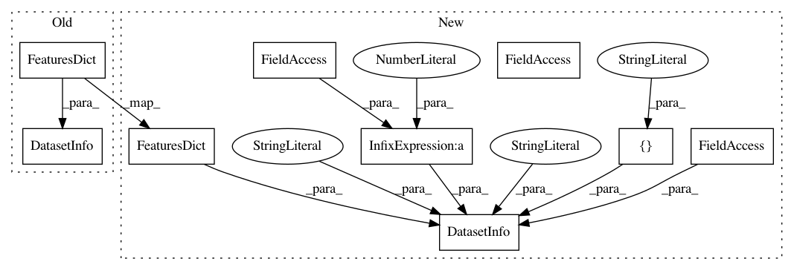

7795dd3743ffbf0684501da6aa6961f2481bc4c9,tensorflow_datasets/video/bair_robot_pushing.py,BairRobotPushing,_info,#BairRobotPushing#,64
Before Change
]
def _info(self):
return tfds.core.DatasetInfo(
features=tfds.features.FeaturesDict({
// TODO(michalski): replace with Video feature.
"video_main":
tfds.features.Tensor(
shape=(FRAMES_PER_VIDEO, 64, 64, 3), dtype=tf.uint8),
"video_aux1":
tfds.features.Tensor(
shape=(FRAMES_PER_VIDEO, 64, 64, 3), dtype=tf.uint8),
"action":
tfds.features.Tensor(
shape=(FRAMES_PER_VIDEO, 4), dtype=tf.float32),
"endeffector_pos":
tfds.features.Tensor(
shape=(FRAMES_PER_VIDEO, 3), dtype=tf.float32),
}),)
def _parse_single_video(self, example_proto):
Parses single video from the input tfrecords.
After Change
]
def _info(self):
return tfds.core.DatasetInfo(
name=self.name,
description="This data set contains roughly 59,000 examples of robot "
"pushing motions, including one training set (train) and "
"two test sets of previously seen (testseen) and unseen "
"(testnovel) objects.",
features=tfds.features.FeaturesDict({
// TODO(michalski): replace with Video feature.
"video_main":
tfds.features.Tensor(
shape=(FRAMES_PER_VIDEO, 64, 64, 3), dtype=tf.uint8),
"video_aux1":
tfds.features.Tensor(
shape=(FRAMES_PER_VIDEO, 64, 64, 3), dtype=tf.uint8),
"action":
tfds.features.Tensor(
shape=(FRAMES_PER_VIDEO, 4), dtype=tf.float32),
"endeffector_pos":
tfds.features.Tensor(
shape=(FRAMES_PER_VIDEO, 3), dtype=tf.float32),
}),
urls=["https://sites.google.com/site/brainrobotdata/home/push-dataset"],
size_in_bytes=30.0 * tfds.core.units.GiB,
citation="Unsupervised Learning for Physical Interaction through Video "
" Prediction. Chelsea Finn, Ian Goodfellow, Sergey Levine",
)
def _parse_single_video(self, example_proto):
Parses single video from the input tfrecords.
In pattern: SUPERPATTERN
Frequency: 3
Non-data size: 9
Instances
Project Name: tensorflow/datasets
Commit Name: 7795dd3743ffbf0684501da6aa6961f2481bc4c9
Time: 2018-11-16
Author: afrozm@google.com
File Name: tensorflow_datasets/video/bair_robot_pushing.py
Class Name: BairRobotPushing
Method Name: _info
Project Name: tensorflow/datasets
Commit Name: f7fd8a8395cbb90973dbd3ab7b55cda80865b656
Time: 2018-11-16
Author: afrozm@google.com
File Name: tensorflow_datasets/image/cifar.py
Class Name: Cifar100
Method Name: _info
Project Name: tensorflow/datasets
Commit Name: f7fd8a8395cbb90973dbd3ab7b55cda80865b656
Time: 2018-11-16
Author: afrozm@google.com
File Name: tensorflow_datasets/image/cifar.py
Class Name: Cifar10
Method Name: _info